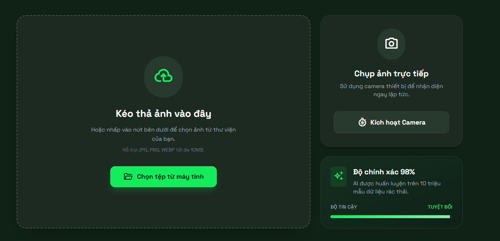
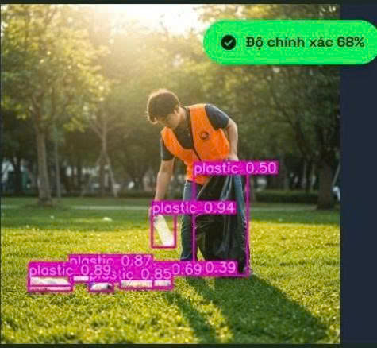

Hướng dẫn sử dụng EcoScan AI
Khám phá cách thức phân loại rác thông minh chỉ với 3 bước đơn giản cùng công nghệ AI hiện đại nhất.
Bước 1: Tải ảnh lên hoặc Chụp ảnh trực tiếp
Chụp ảnh trực tiếp hoặc tải ảnh rác thải từ thư viện điện thoại/máy tính của bạn. Nếu đang ở ngoài, hãy sử dụng tính năng camera để nhận diện vật phẩm ngay lập tức một cách nhanh chóng và chính xác.
- check_circle Chụp ảnh trực tiếp cực kỳ sắc nét
- check_circle Hỗ trợ định dạng JPG, PNG, WEBP
- check_circle Chụp cận cảnh để AI nhận diện tốt nhất


Bước 2: AI Phân tích dữ liệu
Sau khi tải ảnh, thuật toán thị giác máy tính của EcoScan AI sẽ tiến hành quét các vật thể. Hệ thống sẽ tự động khoanh vùng và xác định loại vật liệu có trong hình ảnh của bạn.
"Công nghệ AI của chúng tôi có thể nhận diện hơn 150 loại rác thải sinh hoạt khác nhau với độ chính xác trên 90%."
Bước 3: Xem kết quả chi tiết
Sau khi phân tích, hệ thống sẽ cung cấp cho bạn thông tin toàn diện về vật liệu, tác động môi trường và hướng dẫn xử lý đúng cách nhất.
Phân tích chi tiết
Tác động môi trường
Việc tái chế 1 tấn nhựa PET giúp tiết kiệm 3,8 thùng dầu thô và giảm đáng kể lượng khí thải CO2.
Mức độ độc hại
Nhựa PET an toàn khi sử dụng một lần. Không nên tái sử dụng nhiều lần để tránh vi khuẩn tích tụ.
Quy trình xử lý
- • Làm rỗng và rửa sạch chai
- • Bóp bẹp để tiết kiệm diện tích